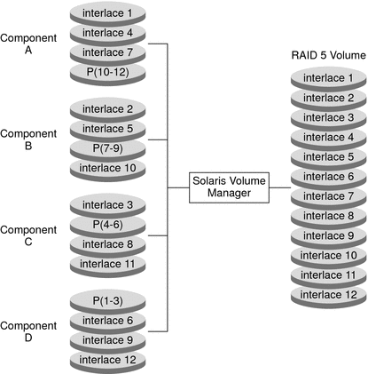
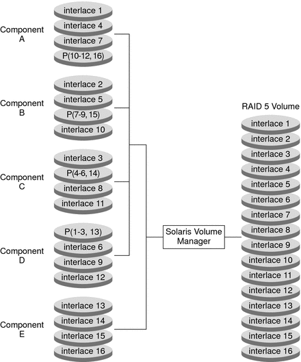

|
|||
|
1. Getting Started With Solaris Volume Manager 2. Storage Management Concepts 3. Solaris Volume Manager Overview 4. Solaris Volume Manager for Sun Cluster (Overview) 5. Configuring and Using Solaris Volume Manager (Scenario) 8. RAID-0 (Stripe and Concatenation) Volumes (Overview) 9. RAID-0 (Stripe and Concatenation) Volumes (Tasks) 10. RAID-1 (Mirror) Volumes (Overview) 11. RAID-1 (Mirror) Volumes (Tasks) 12. Soft Partitions (Overview) Background Information for Creating RAID-5 Volumes Overview of Checking Status of RAID-5 Volumes Overview of Replacing and Enabling Slices in RAID-5 Volumes 16. Hot Spare Pools (Overview) 20. Maintaining Solaris Volume Manager (Tasks) 21. Best Practices for Solaris Volume Manager 22. Top-Down Volume Creation (Overview) 23. Top-Down Volume Creation (Tasks) 24. Monitoring and Error Reporting (Tasks) 25. Troubleshooting Solaris Volume Manager (Tasks) A. Important Solaris Volume Manager Files B. Solaris Volume Manager Quick Reference |
Overview of RAID-5 VolumesRAID level 5 is similar to striping, but with parity data distributed across all components (disk or logical volume). If a component fails, the data on the failed component can be rebuilt from the distributed data and parity information on the other components. In Solaris Volume Manager, a RAID-5 volume is a volume that supports RAID level 5. A RAID-5 volume uses storage capacity equivalent to one component in the volume to store redundant information (parity). This parity information contains information about user data stored on the remainder of the RAID-5 volume's components. That is, if you have three components, the equivalent of one component is used for the parity information. If you have five components, then the equivalent of one component is used for parity information. The parity information is distributed across all components in the volume. Similar to a mirror, a RAID-5 volume increases data availability, but with a minimum of cost in terms of hardware and only a moderate penalty for write operations. However, you cannot use a RAID-5 volume for the root (/), /usr, and swap file systems, or for other existing file systems. Solaris Volume Manager automatically resynchronizes a RAID-5 volume when you replace an existing component. Solaris Volume Manager also resynchronizes RAID-5 volumes during rebooting if a system failure or panic took place. Example—RAID-5 VolumeFigure 14-1 illustrates a RAID-5 volume that consists of four disks (components). The first three data segments are written to Component A (interlace 1), Component B (interlace 2), and Component C (interlace 3). The next data segment that is written is a parity segment. This parity segment is written to Component D (P 1–3). This segment consists of an exclusive OR of the first three segments of data. The next three data segments are written to Component A (interlace 4), Component B (interlace 5), and Component D (interlace 6). Then, another parity segment is written to Component C (P 4–6). This pattern of writing data and parity segments results in both data and parity being spread across all disks in the RAID-5 volume. Each drive can be read independently. The parity protects against a single disk failure. If each disk in this example were 2 Gbytes, the total capacity of the RAID-5 volume would be 6 Gbytes. One drive's worth of space is allocated to parity. Figure 14-1 RAID-5 Volume ExampleExample—Concatenated (Expanded) RAID-5 VolumeThe following figure shows an example of an RAID-5 volume that initially consisted of four disks (components). A fifth disk has been dynamically concatenated to the volume to expand the RAID-5 volume. Figure 14-2 Expanded RAID-5 Volume ExampleThe parity areas are allocated when the initial RAID-5 volume is created. One component's worth of space is allocated to parity, although the actual parity blocks are distributed across all of the original components to distribute I/O. When additional components are concatenated to the RAID-5 volume, the additional space is devoted entirely to data. No new parity blocks are allocated. The data on the concatenated component is, however, included in the parity calculations, so the data is protected against single device failures. Concatenated RAID-5 volumes are not suited for long-term use. Use a concatenated RAID-5 volume until it is possible to reconfigure a larger RAID-5 volume. Then, copy the data to the larger volume. Note - When you add a new component to a RAID-5 volume, Solaris Volume Manager “zeros” all the blocks in that component. This process ensures that the parity protects the new data. As data is written to the additional space, Solaris Volume Manager includes the data in the parity calculations. |
||
|